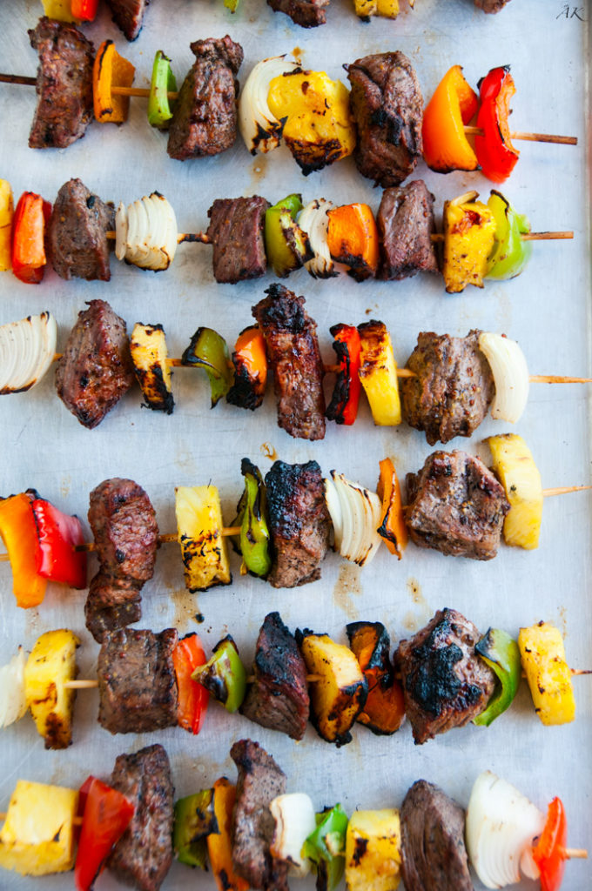

Grilled pineapple beef kabobs

Summer definitely has its perks, my favorite being BBQ time!!!
The only way to cook when it gets this hot is outside on a grill so the house stays cool.
Grilled Pineapple Beef Kabobs here I come!
What we need to have:
For the marinade
- 1 ½ lbs petite sirloin beef, cut into 1 inch cubes
- 2 teaspoons black pepper
- 1 tablespoon coarse salt
- 1 ½ teaspoons brown sugar
- 2 tablespoons olive oil
- ¼ teaspoon sesame oil
- ½ teaspoon red wine vinegar
- 1 tablespoon gluten-free soy sauce
- 1 tablespoon whole grain mustard
For the kabobs
- 1 large yellow onion, halved and quartered into large chunks
- 1 green bell pepper, cut into large chunks
- 1 orange bell pepper, cut into large chunks
- 1 red bell pepper, cut into large chunks
- 1 pineapple, outside removed and cut into large chunks
How to cook:
- Make the marinade: In a large plastic bag, add beef, salt and pepper and toss until the meat is coated.
Add the brown sugar, olive oil, sesame oil, red wine vinegar, soy sauce and whole grain mustard.
Toss until coated. Chill for at least 30 minutes, preferably 4 hours.
- Heat up a grill. Alternatively, heat a grill pan over medium high heat.
- Soak kabob skewers in water for 30 minutes. Remove beef from the marinade and shake off any excess liquid, reserving the marinade.
- Thread beef, onion, bell pepper and pineapple onto skewers as desired.
- Place the kabobs on the grill and brush with some of the reserved marinade. Cover and cook for 5 minutes.
Flip the kabobs over after 5 minutes and brush on the rest of the marinade.
Cover and cook another 5 minutes for medium rare or continue to cook until desired doneness.
Back to the main page